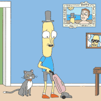

kelsy gagnebin
Mini Case Study

Lagrange is a minimalist Jekyll theme. The purpose of this theme is to provide a simple, clean, content-focused blogging platform for your personal site or blog. Below you can find everything you need to get started.
test mountains.jpg

Getting Started
Installation Guide: getting started with installing Lagrange, whether you are completely new to using Jekyll, or simply just migrating to a new Jekyll theme.
Using Lagrange
Working With Jekyll: how to use Jekyll to create your own site.
Working With Lagrange: information on features specific to this Jekyll theme.
Example Content
Questions?
This theme is completely free and open source software. You may use it however you want, as it is distributed under the MIT License. If you are having any problems, any questions or suggestions, feel free to tweet at me, or file a GitHub issue.
Written on January 1st , 2016 by Paul Le